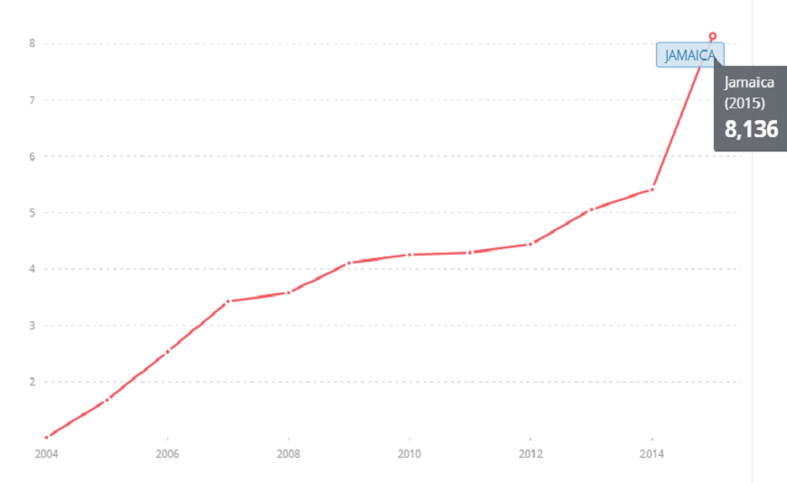
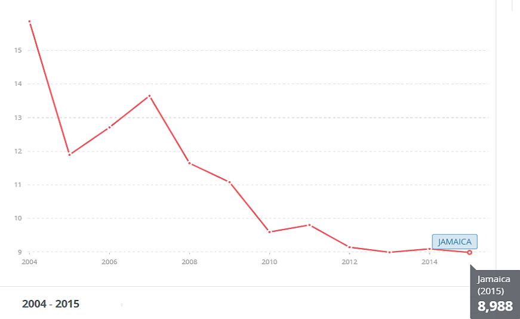
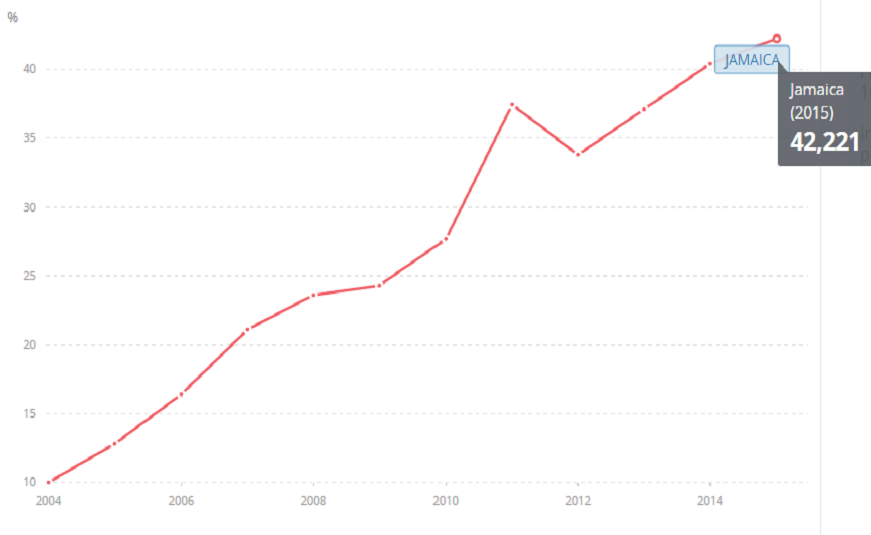
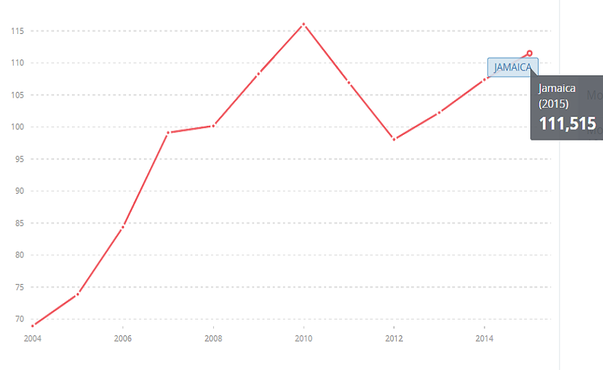

JAMAICA
ESTADÍSTICAS
SUSCRIPCIONES DE BANDA ANCHA FIJA (POR CADA 100 PERSONAS) SUSCRIPCIONES TELEFÓNICAS FIJAS (POR CADA 100 PERSONAS)
 PORCENTAJE DE LA POBLACIÓN QUE UTILIZA INTERNET SUSCRIPCIONES DE CELULARES MÓVILES (POR CADA 100 PERSONAS)
 Fuente: Banco Mundial (2004-2015)
ENTIDADES REGULADORAS